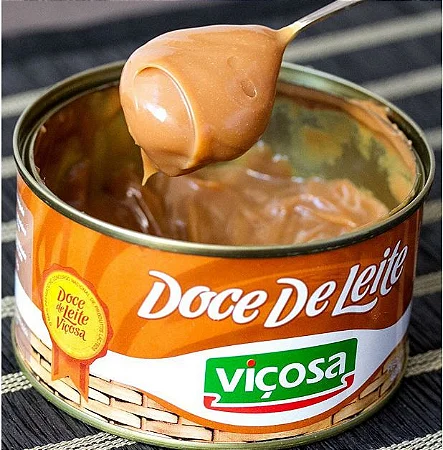

Minas Gerais
Comidas Típicas
Frango com Quiabo - A mistura desses dois ingredientes rende um dos pratos mais clássicos para os mineiros, feito a partir de um ensopado de frango caipira. Afirma-se que o sabor “original” dessa receita só é possível com a utilização desse tipo de frango, pois o frango industrializado acaba tirando toda a essência do autêntico frango com quiabo.

Feijão Tropeiro - Mais uma vez, o feijão estrela uma das receitas mais tradicionais de Minas Gerais, em um prato que surgiu com os tropeiros, que misturavam farinha, carne e ovos ao feijão. O resultado é uma iguaria com sabor único, que está presente em larga escala pelos restaurantes dos mais de 800 municípios mineiros.

Doce de Leite - É impossível falar de comida mineira e não falar do doce de leite. Não é à toa que esse doce ganhou prestígio até internacional, pois ele combina com tudo! Em terras mineiras, é comum consumi-lo puro ou até com queijo. Inclusive, vale ressaltar que o melhor doce de leite do Brasil, premiado diversas vezes como tal, é de uma cidade mineira: Viçosa!
Músicas de Minas Gerais
Quem Sabe Isso Quer Dizer Amor - Milton Nascimento
Embora carioca, o cantor Milton Nascimento se considera mineiro, pois foi o local onde foi criado. Considerado um dos melhores compositores brasileiros da história, ele é um ícone de Minas Gerais e essa música só comprova isso.
Bola De Meia, Bola De Gude - 14 Bis
A banda 14 Bis foi fundada em Belo Horizonte, capital de Minas Gerais. Quase todos seus membros são oriundos de terras mineiras, exceto o baixista que nasceu no Rio de Janeiro. Essa banda é um motivo de muito orgulho para os mineiros, que se sentem representados ao ouvi-la.
O Trem Azul - Lô Borges
Lô Borges é um cantor mineiro, que marcou a música nacional durante as décadas de 1970 e 1980. Essa música foi uma das que fez o artista se tornar popular. Muitas pessoas consideram o trem azul como uma metáfora para a vida, mas também foi adotado pelo clube mineiro de futebol Cruzeiro como uma forma de chamar sua equipe.